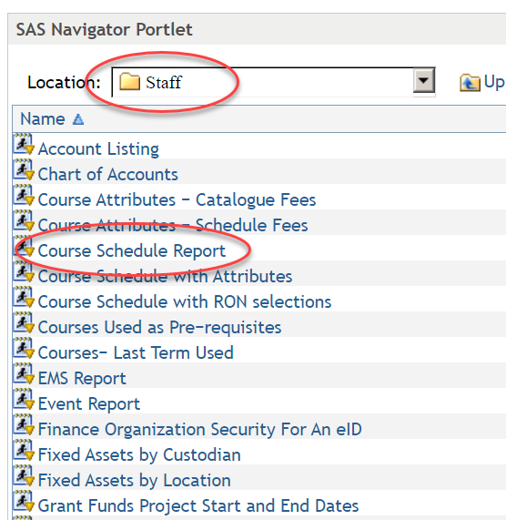
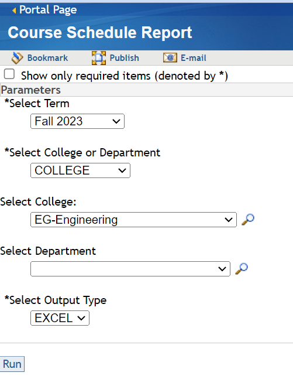

| File name | Term Code | Acad Year | Period Code | Period Name |
|---|---|---|---|---|
| VCU-SOC-202130-SU2021.xlsx | 202130 | AY20-21 | SU2021 | Summer 2021 |
| VCU-SOC-202330-SU2023.xlsx | 202330 | AY22-23 | SU2023 | Summer 2023 |
| VCU-SOC-202220-SP2022.xlsx | 202220 | AY21-22 | SP2022 | Spring 2022 |
| VCU-SOC-202230-SU2022.xlsx | 202230 | AY21-22 | SU2022 | Summer 2022 |
| VCU-SOC-202310-FA2022.xlsx | 202310 | AY22-23 | FA2022 | Fall 2022 |
| VCU-SOC-202320-SP2023.xlsx | 202320 | AY22-23 | SP2023 | Spring 2023 |
| VCU-SOC-202410-FA2023.xlsx | 202410 | AY23-24 | FA2023 | Fall 2023 |
| VCU-SOC-202110-FA2020.xlsx | 202110 | AY20-21 | FA2020 | Fall 2020 |
| VCU-SOC-202120-SP2021.xlsx | 202120 | AY20-21 | SP2021 | Spring 2021 |
| VCU-SOC-202210-FA2021.xlsx | 202210 | AY21-22 | FA2021 | Fall 2021 |
Downloading the data
Data sources
Data were pulled from the VCU Reporting Center in the Staff | Course Schedule Report as shown below:
Reports are run by semester for the College of Engineering and stored in separate files. Care should be taken to open each file after it’s been saved and RESAVE the file into XLSX format.


The files are named appropriately and stored in the data folder in this repository.
These data are difficult to work in separate files and often contain incorrect or inconsistent data. A significant process of data cleaning was undertaken prior to computing workloads.